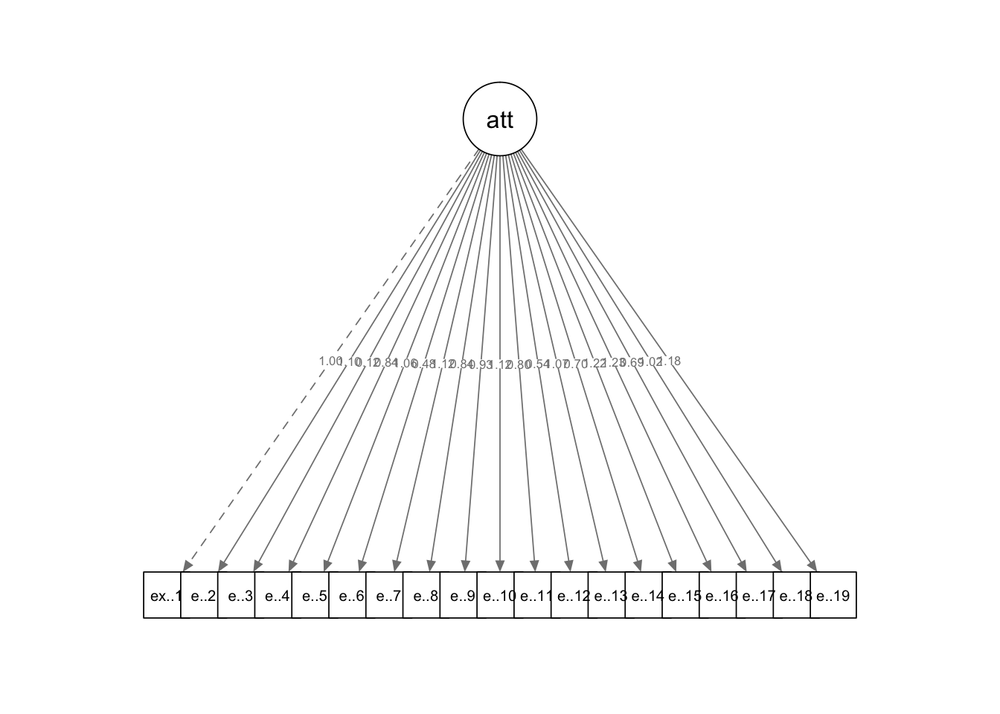

Content
We will be using the following packages in this week’s workbook:
library(lavaan)
library(tidyverse)
library(semPlot)Before We Start…
This workbook is only meant to serve as an introduction to the lavaan package, and therefore will only introduce some of the basic functions. You are able to add a lot of complexity to structural equation models that we will not be touching. If you truely wish to master this package, you will need to go beyond the content covered here.
Mediation Analysis Through Structural Equation Modelling (SEM)
Mediation is an example of a simple SEM. We will first re-run the mediation we conducted in Workbook 7 in the lavaan package. If you recall, we were interested in the relationship between statistics teacher comprehension and stress and whether this is explained through individual’s belief about the anxiety at taking statistics test (i.e., individuals who find statistics teachers hard to understand increase their anxiety about taking statistics tests, which in turn increases stress).
As with all analyses, we will be following the basic procedure of:
- Clean the data for analysis.
- Run the statistical test.
- Plot the data.
- Write-up analysis.
1. Clean the data for analysis.
As always, our first step is to calculate the variables from the individual items.
The code below is identical to the code that we ran in Workbook 7 to prepare the data for analysis.
data2.clean <- data %>%
mutate(teacher = stars.30 + stars.32 + stars.43 + stars.44 + stars.46,
support = support.1 + support.2 + support.3 + support.4 + support.5 + support.6 + support.7 + support.8 + support.9 + support.10 + support.11 + support.12,
stress = stress.1 + stress.2 + stress.3 + stress.4 + stress.5 + stress.6 + stress.7 + stress.8 + stress.9 + stress.10,
stars.test = stars.1 + stars.4 + stars.8 + stars.10 + stars.13 + stars.15 + stars.21 + stars.22) %>%
dplyr::select(student.no,teacher,support,stars.test,stress)2. Run statistical test.
Previously, when specifying a regression in R, we have used the following form:
y ~ x1 + x2 + x3 + …
An SEM formula is an extention of of this, where multiple regression equations (or similar relationships) are estimated at once. Like with a regression, we use the ~ to specify a relationship between an outcome (on the left), and predictors (on the right).
In the table below are some other relationships that you may use when constructing a SEM.
| operator | relationship type | example | explanation |
|---|---|---|---|
=~ |
Latent Variable | y =~ x1 + x2 + x3… | y is measured by x1, x2, x3, etc. |
~~ |
Covariance | x1 ~~ x2 | x1 is correlated with x2 |
:= |
Define Parameter | effect := a*b | Estimate ‘effect’ which is made up of ‘a’ times ‘b’ |
Note: you can also label parameters by using the * symbol before variables. If you give two variables the same label, it will force the estimates to be the same (this comes in handy sometimes, but not something we will use in this workbook).
Below is the formula to conduct a mediation analysis identical to the one we conducted in Workbook 7. See if you can understand each line and what relationship it is specifying before reading the breakdown:
sem.formula <- '
stress ~ c*teacher
stress ~ b*stars.test
stars.test ~ a*teacher
indirect := a*b
direct := c
total := direct + indirect
'Let’s break this down:
| line | explanation |
|---|---|
| stress ~ c*teacher | Stress is predicted from teacher, and this relationship is labelled ‘c’ |
| stress ~ b*statsanxiety | Stress is predicted from statsanxiety, and this relationship is labelled ‘b’ |
| statsanxiety ~ a*teacher | Statsanxiety is predicted from teacher, and this relationship is labelled ‘a’ |
| indirect := a*b | Define a parameter called ‘indirect’ which is made up of ‘a’ times ‘b’ |
| direct := c | Define a parameter called ‘direct’ which is made up of ‘c’ |
| total := direct + indirect | Define the total effect (the combination of direct and indirect effect). |
Essentially, the first three lines of the code are identical to running the y.model and m.model that we ran in Workbook 7, while the last two lines are like running the mediate() function get estimate the indirect and direct effect.
To run the SEM, we use the sem() function. Like all analyses done previously, we need to specify two things: the formula (which we saved as the object sem.formula) and the dataset.
med.sem.model <- sem(sem.formula,data2.clean)
summary(med.sem.model)## lavaan 0.6-3 ended normally after 19 iterations
##
## Optimization method NLMINB
## Number of free parameters 5
##
## Used Total
## Number of observations 114 118
##
## Estimator ML
## Model Fit Test Statistic 0.000
## Degrees of freedom 0
## Minimum Function Value 0.0000000000000
##
## Parameter Estimates:
##
## Information Expected
## Information saturated (h1) model Structured
## Standard Errors Standard
##
## Regressions:
## Estimate Std.Err z-value P(>|z|)
## stress ~
## teacher (c) -0.103 0.109 -0.947 0.344
## stars.test (b) 0.008 0.043 0.181 0.856
## stars.test ~
## teacher (a) 0.631 0.229 2.759 0.006
##
## Variances:
## Estimate Std.Err z-value P(>|z|)
## .stress 9.169 1.214 7.550 0.000
## .stars.test 43.219 5.725 7.550 0.000
##
## Defined Parameters:
## Estimate Std.Err z-value P(>|z|)
## indirect 0.005 0.027 0.181 0.856
## direct -0.103 0.109 -0.947 0.344
## total -0.098 0.105 -0.931 0.352If we compare the results here to that of Workbook 7, we should see that we get the same results.
3. Plot the model.
The easiest way to plot a structural equation model is using a path diagram. Unfortunately, this is not easy to do in ggplot2. However, we can use a the semPaths() function from the semPlot package. This function has the advantage of being easy to use - all you need to do is load your model estimated in laavan and specify which paths you want to see (or hide). The disadvantage is that you cannot choose how you layout your path diagram, or customise the look of your diagram. Therefore, in order to create publication worthy graphics, you must use another program.
semPaths(med.sem.model,whatLabel = "est",intercept = FALSE,residuals = FALSE)More complicated Path Analysis
We will now have a go at conducting a more complicated SEM. We will revisit the data from Workbook 5 to determine the relationship between attitudes to fitness, norms surrounding fitness, perceived behavioural control, and intentions to exercise, on exercise behaviour. The model we will fit is based on the Theory of Planned Behaviour, and is depicted below.

In words, we predict that attitudes towards exercise, norms about exercise, and perceived behavioural control regarding exercise will predict intention to exercise. In turn, intention to exercise predict exercise behaviour. We also predict that perceived behavioural control regarding exercise will directly predict exercise behaviour.
1. Clean the data for analysis.
First, we must calculate the variables from each of the items.
data2.clean <- data %>%
mutate(attitude = exercise.attitude.1 + exercise.attitude.2 + exercise.attitude.3 + exercise.attitude.4 + exercise.attitude.5 + exercise.attitude.6 + exercise.attitude.7 + exercise.attitude.8 + exercise.attitude.9 + exercise.attitude.10 + exercise.attitude.11 + exercise.attitude.12 + exercise.attitude.13 + exercise.attitude.14 + exercise.attitude.15 + exercise.attitude.16 + exercise.attitude.17 + exercise.attitude.18 + exercise.attitude.19,
intention = exercise.intention.1 + exercise.intention.2 + exercise.intention.3 + exercise.intention.4 + exercise.intention.5 + exercise.intention.6 + exercise.intention.7 + exercise.intention.8 + exercise.intention.9 + exercise.intention.10 + exercise.intention.11,
control = exercise.control.1 + exercise.control.2 + exercise.control.3,
norms = exercise.norms.1 + exercise.norms.2 + exercise.norms.3 + exercise.norms.4 + exercise.norms.5 + exercise.norms.6,
behaviour = exercise.behaviour.1 + exercise.behaviour.2 + exercise.behaviour.3 + exercise.behaviour.4 + exercise.behaviour.5 + exercise.behaviour.6 + exercise.behaviour.7 + exercise.behaviour.8 + exercise.behaviour.9 + exercise.behaviour.10 + exercise.behaviour.11) %>%
dplyr::select(student.no,attitude,intention,control,norms,behaviour)2. Run statistical test.
First, we need to specify the model. Below, this model is specified as formula that lavaan can read:
model <- '
intention ~ attitude + norms + control
behaviour ~ intention + control
'To break down the code above: Line 1: Attitudes, norms, and control predict intention. Line 2: Intention and control predicts behaviour.
We then run the SEM model using the sem() function:
sem.model <- sem(model,data = data2.clean)
summary(sem.model,standardized = TRUE,fit = TRUE, rsquare = TRUE)## lavaan 0.6-3 ended normally after 20 iterations
##
## Optimization method NLMINB
## Number of free parameters 7
##
## Used Total
## Number of observations 106 118
##
## Estimator ML
## Model Fit Test Statistic 23.981
## Degrees of freedom 2
## P-value (Chi-square) 0.000
##
## Model test baseline model:
##
## Minimum Function Test Statistic 150.999
## Degrees of freedom 7
## P-value 0.000
##
## User model versus baseline model:
##
## Comparative Fit Index (CFI) 0.847
## Tucker-Lewis Index (TLI) 0.466
##
## Loglikelihood and Information Criteria:
##
## Loglikelihood user model (H0) -768.240
## Loglikelihood unrestricted model (H1) -756.250
##
## Number of free parameters 7
## Akaike (AIC) 1550.480
## Bayesian (BIC) 1569.124
## Sample-size adjusted Bayesian (BIC) 1547.009
##
## Root Mean Square Error of Approximation:
##
## RMSEA 0.322
## 90 Percent Confidence Interval 0.215 0.443
## P-value RMSEA <= 0.05 0.000
##
## Standardized Root Mean Square Residual:
##
## SRMR 0.060
##
## Parameter Estimates:
##
## Information Expected
## Information saturated (h1) model Structured
## Standard Errors Standard
##
## Regressions:
## Estimate Std.Err z-value P(>|z|) Std.lv Std.all
## intention ~
## attitude 0.304 0.057 5.319 0.000 0.304 0.508
## norms 0.238 0.119 1.991 0.047 0.238 0.154
## control 0.499 0.285 1.752 0.080 0.499 0.155
## behaviour ~
## intention 0.380 0.099 3.834 0.000 0.380 0.328
## control 1.553 0.319 4.869 0.000 1.553 0.417
##
## Variances:
## Estimate Std.Err z-value P(>|z|) Std.lv Std.all
## .intention 67.104 9.217 7.280 0.000 67.104 0.519
## .behaviour 100.796 13.845 7.280 0.000 100.796 0.581
##
## R-Square:
## Estimate
## intention 0.481
## behaviour 0.419Notice above in the summary() function, we have included additional arguments to get extra statistics that are helpful when it comes to report the analysis.
3. Plot the model.
Again, we use semPaths() to plot our SEM model. Here, the limitations of not being able to organise the layout of your plot is apparant, though it still may be helpful to visualise your results to help your understanding.
semPaths(sem.model,whatLabel = "est",intercept = FALSE,residuals = FALSE)
Introducing Latent Variables
Up to now, to calculate variables from individual items, we have been adding each item up. However, we could also compute latent variables, which are the underlying variables that each item is meant to tap into.
For example, we could calculate the latent variable ‘attitude’ from each of the individual items.
attitude.formula <- '
attitude =~ exercise.attitude.1 + exercise.attitude.2 + exercise.attitude.3 + exercise.attitude.4 + exercise.attitude.5 + exercise.attitude.6 + exercise.attitude.7 + exercise.attitude.8 + exercise.attitude.9 + exercise.attitude.10 + exercise.attitude.11 + exercise.attitude.12 + exercise.attitude.13 + exercise.attitude.14 + exercise.attitude.15 + exercise.attitude.16 + exercise.attitude.17 + exercise.attitude.18 + exercise.attitude.19
'
attitude.model <- sem(attitude.formula,data = data)
semPaths(attitude.model,whatLabel = "est",intercept = FALSE,residuals = FALSE)
How about we compute latent variables for all the variables in the TPB model above? Doing something like this may not make a lot of sense: we will end up with a gangly model, and we may not have enough observations to get sensible results, but let’s do it anyway! For demonstrative purposes…
Specify the Model
model <- '
attitude =~ exercise.attitude.1 + exercise.attitude.2 + exercise.attitude.3 + exercise.attitude.4 + exercise.attitude.5 + exercise.attitude.6 + exercise.attitude.7 + exercise.attitude.8 + exercise.attitude.9 + exercise.attitude.10 + exercise.attitude.11 + exercise.attitude.12 + exercise.attitude.13 + exercise.attitude.14 + exercise.attitude.15 + exercise.attitude.16 + exercise.attitude.17 + exercise.attitude.18 + exercise.attitude.19
intention =~ exercise.intention.1 + exercise.intention.2 + exercise.intention.3 + exercise.intention.4 + exercise.intention.5 + exercise.intention.6 + exercise.intention.7 + exercise.intention.8 + exercise.intention.9 + exercise.intention.10 + exercise.intention.11
control =~ exercise.control.1 + exercise.control.2 + exercise.control.3
norms =~ exercise.norms.1 + exercise.norms.2 + exercise.norms.3 + exercise.norms.4 + exercise.norms.5 + exercise.norms.6
behaviour =~ exercise.behaviour.1 + exercise.behaviour.2 + exercise.behaviour.3 + exercise.behaviour.4 + exercise.behaviour.5 + exercise.behaviour.6 + exercise.behaviour.7 + exercise.behaviour.8 + exercise.behaviour.9 + exercise.behaviour.10 + exercise.behaviour.11
intention ~ attitude + norms + control
behaviour ~ intention + control
'We won’t run the summary() just now because it is very unwieldy…
sem.model <- sem(model,data = data)
#summary(sem.model,standardized = TRUE,fit = TRUE, rsquare = TRUE)Again, we can plot the SEM using semPaths(), but this gets pretty messy, given the number of items make up each latent variable.